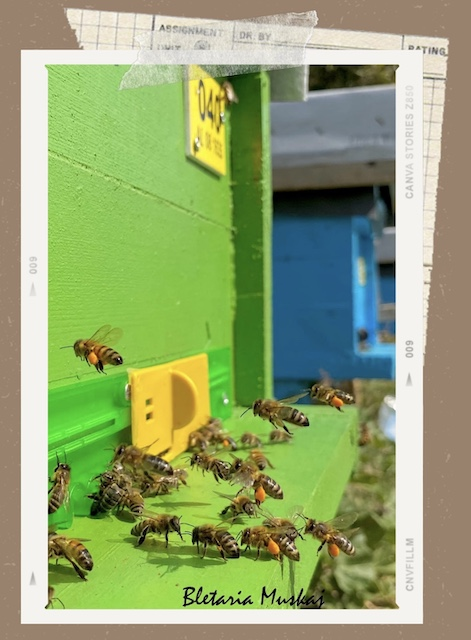

Bletet tona punetore
Lulet luajne nje rol shume te rendesishem ne dhenjen e shijes se mjaltit sepse ai prodhohet nga nektari i tyre. Lulet te cilat bletet perdoren per me marre nektarin dhe qe ndodhen afer bletarise sone jane shume te rralla te cilat rriten vetem ne kete zone ne temeratura qe i kalojne 35 grade. Keto bime jane : thimar, millosfage,mersine.
Bletet luajne nje rol shume te rendesishem ne rritjen e llojeve te ndryshme te frutave/perimeve. Poleni (protein e cila i jep energji bleteve) prodhohet nga lulet dhe pemet. Kjo protein ne forme pudre duhet shperndare per te ndihmuar rritjen e te njejtin tip luleje apo peme. Poleni shperndahet me ane te eres (levizja e eres) ose me ane te insekteve te cilat e transferojne lule me lule.
Kjo faze ndihmon ne polenizimin e luleve te ndryshme (transformini nga lule ne fruta/arra).
FAKT: Bletet jane pergjegjese per polenizimin e 1/3 te ushqimeve qe ne konsumojme 🌸

A e dini si e transportojne bletet polenin?
Bletet kane disa hapesira ne kembet e tyre te pasme ne te cilat mbajne polenin gjate transportimit te tij ne koshere.
A e dini si e prodhojne mjaltin bletet? 🐝
Te gjitha bletet pergjate jetes se tyre kane role te ndryshme. Per te prodhuar mjalte, bletet puntore fluturojne deri ne 5km per te kerkuar lulet dhe nektarin e tyre te embel.
Bletet punetore komunikojne me njera tjeren per te vendosur se cilat lule do te perdorin. Pasi kane zgjedhur tipin e lules me ane te gjuhes bletet marrin nektarin dhe e vendosin ne kembezat e tyre. Ato shkojne me pase ne koshere dhe kete nektar ua japin “bleteve te shtepise”.
Nje pjese e nektarit perdoret per te krijuar hojet e mjaltit dhe pjesa tjeter transformohet ne mjalte duke perplasur krahet e tyre te cilat nxjerrin ajer te ngrohte. Pasi e kane mbushur hojen me mjalte (sic duket dhe ne foto) ato vendosin nje cipe dylli per te mos e lene te thahet dhe per ta ruajtur pergjate kohes.
Jo me kot bletet quhen punetore 💛
Fotoja qe shihni eshte shkrepur nga ne (si cdo foto ne faqen tone) dhe ka dashur shume mundim.
Ne kujdesemi cdo dite per bletet tona 🐝